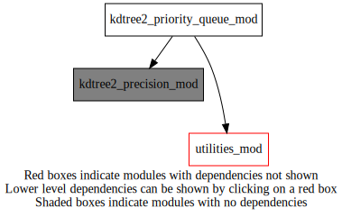
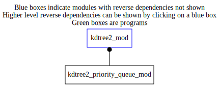

Dependency Diagrams:
 Direct Dependency Diagram¶
 Reverse Dependency Diagram¶
Quick access
- Types
- Routines
heapify(),pq_adjust_heap(),pq_create(),pq_delete(),pq_extract_max(),pq_insert(),pq_max(),pq_maxpri(),pq_replace_max()Needed modules
utilities_mod: MODULE utilities_mod (prefix=’utl’ category=’8. Low-level utilities and constants’)Types
- type kdtree2_priority_queue_mod/kdtree2_result¶
a pair of distances, indexes
- Type fields
% dis [real ] :: =0.0
% idx [integer ] :: =-1 Initializers cause some bugs in compilers.
- type kdtree2_priority_queue_mod/pq¶
The priority queue consists of elements priority(1:heap_size), with associated payload(:).
There are heap_size active elements. Assumes the allocation is always sufficient. Will NOT increase it to match.
- Type fields
% elems (*) [kdtree2_result ,pointer]
% heap_size [integer ]
Variables
Subroutines and functions
- function kdtree2_priority_queue_mod/pq_create(results_in)¶
- Purpose
Create a priority queue from ALREADY allocated array pointers for storage. NOTE! It will NOT add any alements to the heap, i.e. any existing data in the input arrays will NOT be used and may be overwritten.
- Arguments
results_in (*) [kdtree2_result ,target]
- Return
res [pq ]
- Called from
- subroutine kdtree2_priority_queue_mod/heapify(a, i_in)¶
- Purpose
take a heap rooted at ‘i’ and force it to be in the heap canonical form. This is performance critical and has been tweaked a little to reflect this.
- Arguments
a [pq ,pointer]
i_in [integer ,in]
- Called from
- subroutine kdtree2_priority_queue_mod/pq_max(a, e)¶
- Purpose
return the priority and its payload of the maximum priority element on the queue, which should be the first one, if it is in heapified form.
- Arguments
a [pq ,pointer]
e [kdtree2_result ,out]
- Call to
- function kdtree2_priority_queue_mod/pq_maxpri(a)¶
- Arguments
a [pq ,pointer]
- Return
pq_maxpri [real ]
- Call to
- subroutine kdtree2_priority_queue_mod/pq_extract_max(a, e)¶
- Purpose
return the priority and payload of maximum priority element, and remove it from the queue. (equivalent to ‘pop()’ on a stack)
- Arguments
a [pq ,pointer]
e [kdtree2_result ,out]
- Called from
- Call to
- function kdtree2_priority_queue_mod/pq_insert(a, dis, idx)¶
- Purpose
Insert a new element and return the new maximum priority, which may or may not be the same as the old maximum priority.
- Arguments
a [pq ,pointer]
dis [real ,in]
idx [integer ,in]
- Return
pq_insert [real ]
- Called from
- subroutine kdtree2_priority_queue_mod/pq_adjust_heap(a, i)¶
- Arguments
a [pq ,pointer]
i [integer ,in]
- function kdtree2_priority_queue_mod/pq_replace_max(a, dis, idx)¶
- Purpose
Replace the extant maximum priority element in the PQ with (dis,idx). Return the new maximum priority, which may be larger or smaller than the old one.
- Arguments
a [pq ,pointer]
dis [real ,in]
idx [integer ,in]
- Return
pq_replace_max [real ]
- Called from
- Call to
- subroutine kdtree2_priority_queue_mod/pq_delete(a, i)¶
- Purpose
delete item with index ‘i’
- Arguments
a [pq ,pointer]
i [integer ]
- Call to
{kind=link}
{kind=link}